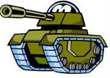
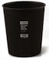

+ View code
<!DOCTYPE html>
<html lang="zh" style="font-size: 46.875px;">
<head>
    <meta charset="UTF-8">
    <title>fly Demo</title>
    <style>
        td {height: 300px;}
        table {width:100%;}
        img {width: 30%;}
    </style>
    <script type="text/javascript" src="https://cdnjs.cloudflare.com/ajax/libs/jquery/1.11.2/jquery.min.js"></script>
    <script type="text/javascript" src="fly.js"></script>
    <script type="text/javascript">
        function fly() {
            var x = $("#fashe").offset().left;
            var y = $("#fashe").offset().top;
            pwxTex(x, y);
        }
        // 抛物线特效
        function pwxTex(x, y) {
            // 开始
            var speedI = 2;  //速度
            // 相对于fky里面的xy起点
            var leftI = 100;  //left值
            var topI = 10; //top值

            // 获得目标的偏移量
            var offset = $('#jieshou').offset();
            var div = document.createElement('div');
            div.className = 'pao';
            div.style.cssText = 'transform: translate3d(0, 0, 0);' +
                                'width: 0.75rem;' +
                                'height: 0.75rem;' +
                                'border-radius: 50%;' +
                                'background: red;' +
                                'position: fixed;' +
                                'z-index: 99999999;' +
                                'top:'+x+'px;left:'+y+'px';
            // 将生成的 div 写入 body 标签下
            $('body').append(div);
            // 获得生成的抛物线效果对象
            var flyer = $('.pao');
            // 结束
            var e_leftI = 100; //结束left
            var e_topI = 500; //结束top
            flyer.fly({
                start: {
                    left: x - leftI,
                    top: y - topI
                },
                end: {
//                  left: (offset.left + $('#jieshou').width() / 2), //结束位置
//                  top: (offset.top + $('#jieshou').height() / 1)
                    left : e_leftI,
                    top : e_topI
                },
                speed: speedI, // 越大越快，默认1.2
                onEnd: function () { // 结束回调
                		$(".pao").css({transform:"scale(0)"},500);
                    	$('#jieshou').css({'transform': 'scale(0.5)'}, 100);
                      this.destroy(); // 销毁这个对象
                }
            });
        }
    </script>
</head>
<body>
    <div>
    	<h1 id="count">0</h1>
        <table>
            <tr>
                <td>
                    
                </td>
            </tr>
            <tr>
                <td>
                    
                </td>
                <td>
                    <button onclick="fly()">飞吧~~</button>
                </td>
            </tr>
        </table>
    </div>
</body>
</html>